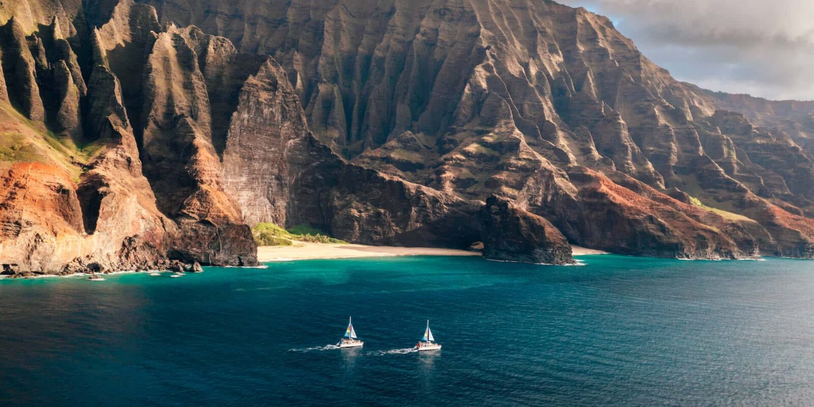

Explore Hawaii with one of our tours!
Volcanic tour

See the amazing volcanoes of Hawaii up close on our Volcano Tour. Walk on old lava fields, look into steaming craters, and hear cool stories about how the islands were made. It’s a mix of nature and adventure, and you’ll get some really great photos along the way.
Na Pali Coast Boat Tour
The Na Pali Coast is one of Hawaii’s most beautiful places, and the best way to see it is by boat. You’ll float past tall cliffs, secret beaches, and waterfalls. Keep an eye out and you might see dolphins, sea turtles, and even humpback whales! It’s relaxing and fun at the same time, and you’ll see the coastline like most people never do.
Coffee Farm Experience

Check out a local coffee farm and see how Hawaii’s famous coffee is made. Walk among the plants, smell the fresh coffee beans, and watch how the farmers pick and roast the cherries. You will also get to taste the coffee. It is smooth, rich, and fresh. It is a simple, fun way to see the hard work behind every cup and enjoy some island flavor.
Snorkeling with Sea Turtles

Grab your snorkel and jump into Hawaii’s clear blue water. Swim with gentle sea turtles, see colorful fish, and explore coral reefs. The guides make it easy even if it is your first time snorkeling. Floating over the reef and seeing turtles up close is magical and you will probably be smiling the whole time.
Hula Dance Workshop
Learn to hula like a local. This workshop is all about having fun while picking up the basic steps and hand movements. Your teacher will also share the stories behind the dance so you get a little taste of Hawaiian culture too. By the end you will have a short routine you can try and a better sense of the islands’ traditions.